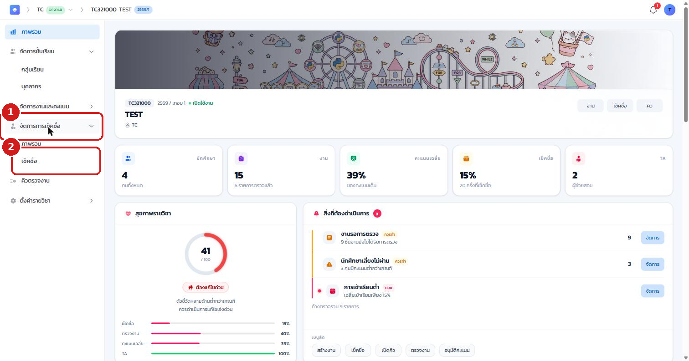
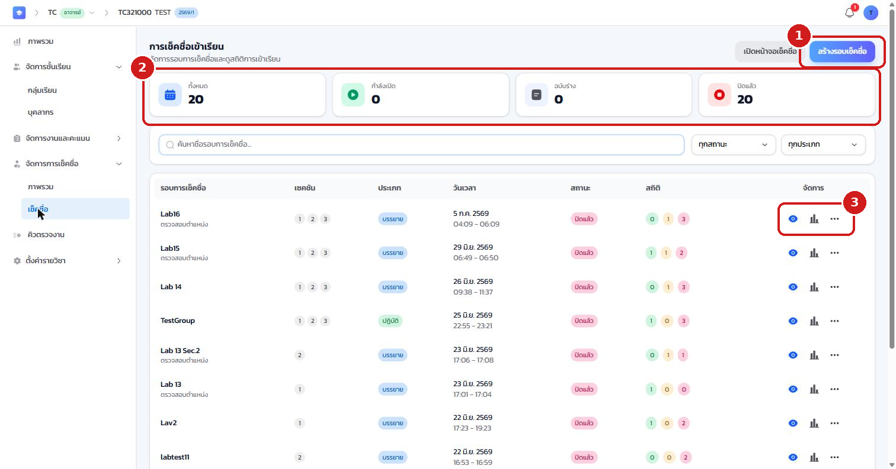
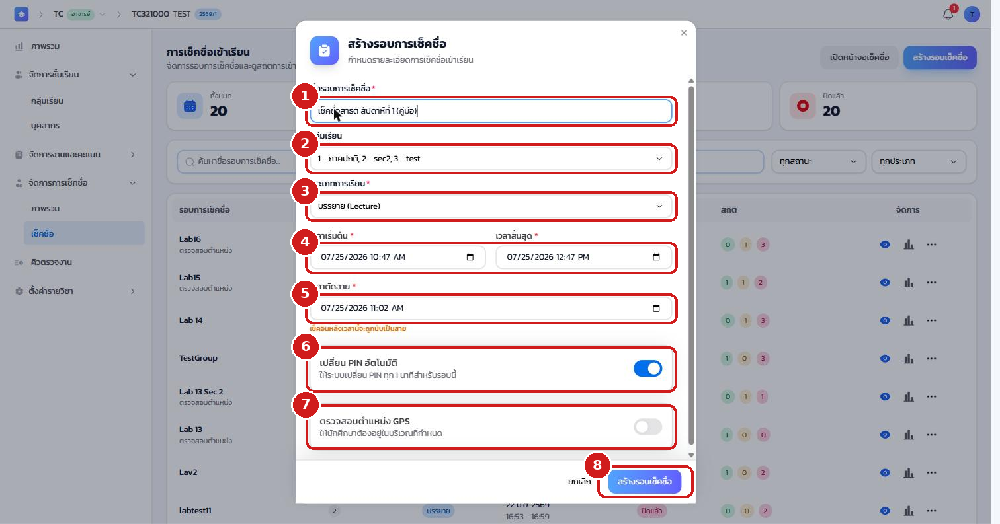
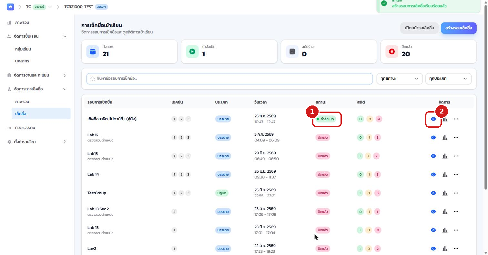
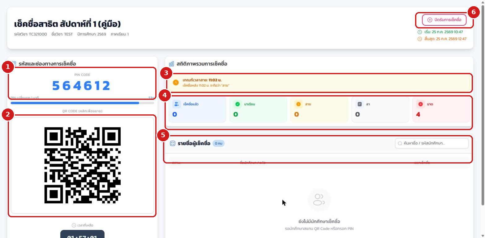
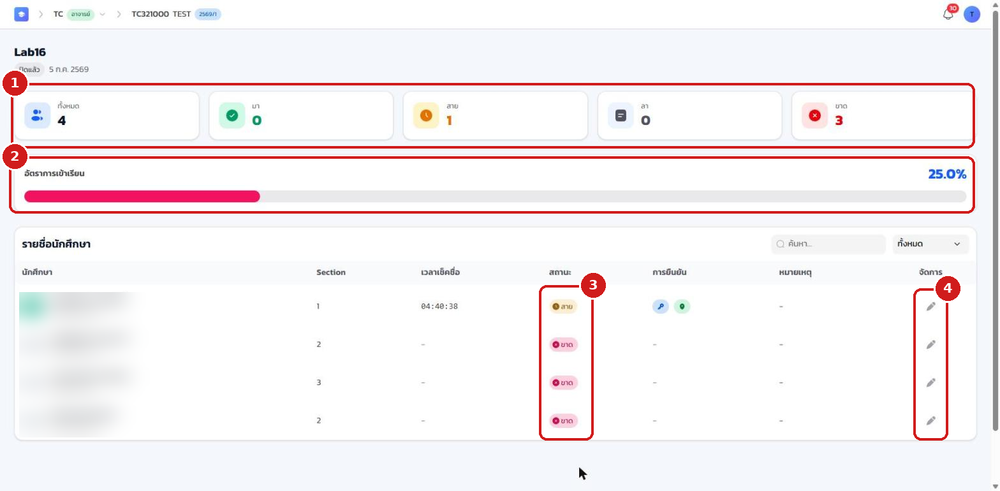

10.1 ภาพรวม#
โมดูลการเช็คชื่อช่วยให้อาจารย์เปิด "รอบการเช็คชื่อ" ประจำคาบ และให้นักศึกษายืนยันการเข้าเรียนผ่านมือถือได้ทันที โดยไม่ต้องขานชื่อทีละคน ท่านสามารถแสดง PIN 6 หลัก และ QR Code ให้นักศึกษาสแกนหรือกรอก กำหนดเกณฑ์ "สาย" อัตโนมัติ เลือกให้ตรวจ ตำแหน่ง GPS ติดตามผลแบบเรียลไทม์ และดูสรุป มา / สาย / ลา / ขาด พร้อมแก้ไขสถานะย้อนหลังได้
10.2 เข้าสู่หน้าจัดการเช็คชื่อ#
- ที่แถบเมนูด้านซ้าย คลิก จัดการการเช็คชื่อ เพื่อขยายเมนูย่อย
- คลิกเมนูย่อย เช็คชื่อ

ระบบจะแสดงหน้า การเช็คชื่อเข้าเรียน ซึ่งรวมรอบเช็คชื่อทั้งหมดของวิชา
- ปุ่ม สร้างรอบเช็คชื่อ สำหรับสร้างรอบใหม่
- แถบสรุปจำนวนรอบ ทั้งหมด / กำลังเปิด / ฉบับร่าง / ปิดแล้ว
- ปุ่มจัดการรายรอบ ได้แก่ ดู สถิติ และเมนูเพิ่มเติมสำหรับแก้ไขหรือลบ (ปุ่ม "เปิดหน้าจอเช็คชื่อ" ที่มุมขวาบนใช้ฉาย PIN/QR ขึ้นจอหน้าห้อง)

10.3 สร้างรอบการเช็คชื่อ#
คลิกปุ่ม สร้างรอบเช็คชื่อ ระบบจะเปิดหน้าต่างให้กรอกรายละเอียด
- กรอก ชื่อรอบการเช็คชื่อ เช่น "เช็คชื่อสัปดาห์ที่ 1"
- เลือก กลุ่มเรียน (Section) ที่จะเช็คชื่อ (เลือกได้มากกว่าหนึ่งหมู่)
- เลือก ประเภทการเรียน เป็นบรรยายหรือปฏิบัติ
- กำหนด เวลาเริ่มต้น และ เวลาสิ้นสุด ของช่วงรับการเช็คชื่อ
- กำหนด เวลาตัดสาย นักศึกษาที่เช็คชื่อหลังเวลานี้จะถูกนับเป็น "สาย" โดยอัตโนมัติ
- เปิด เปลี่ยน PIN อัตโนมัติ เพื่อให้ระบบสุ่ม PIN ใหม่ทุก 1 นาที (แนะนำให้เปิดไว้)
- เปิด ตรวจสอบตำแหน่ง GPS หากต้องการให้นักศึกษาอยู่ในรัศมีห้องเรียนจึงจะเช็คชื่อได้
- เมื่อตั้งค่าครบ คลิกปุ่ม สร้างรอบเช็คชื่อ

เมื่อเปิด "เปลี่ยน PIN อัตโนมัติ" ตัวเลข PIN บนจอจะเปลี่ยนทุก 1 นาที เพื่อป้องกันการส่งต่อ PIN ให้เพื่อนที่ไม่ได้เข้าเรียน จึงควรฉาย PIN/QR ให้นักศึกษาเห็นตลอดช่วงเช็คชื่อ
10.4 เปิดรอบและแสดง PIN / QR#
เมื่อสร้างรอบสำเร็จ ระบบจะแจ้งเตือน และรอบใหม่จะปรากฏบนสุดของรายการ
- สังเกตสถานะเปลี่ยนเป็น กำลังเปิด ซึ่งหมายความว่ารอบพร้อมรับการเช็คชื่อแล้ว
- คลิกไอคอน ดู ที่ท้ายแถวของรอบนั้น เพื่อเปิดหน้าจอเช็คชื่อสด

หน้าจอเช็คชื่อสดจะเปิดขึ้นพร้อมองค์ประกอบสำคัญ
- PIN CODE รหัส 6 หลักให้นักศึกษากรอก
- QR CODE ให้นักศึกษาสแกนเพื่อเข้าหน้าเช็คชื่อ (คลิกที่ภาพเพื่อขยาย)
- เกณฑ์เวลาสาย ย้ำเวลาที่จะเริ่มนับว่าสาย
- สถิติภาพรวม จำนวนเช็คชื่อแล้ว / มาเรียน / สาย / ลา / ขาด แบบเรียลไทม์
- รายชื่อผู้เช็คชื่อ ที่อัปเดตทันทีเมื่อนักศึกษาเช็คชื่อสำเร็จ
- ปุ่ม ปิดรับการเช็คชื่อ สำหรับปิดรอบเมื่อหมดเวลา

นักศึกษาเข้าสู่ระบบในแอปฝั่งนักศึกษา (บัญชี KKU Mail) แล้วเช็คชื่อผ่านการสแกน QR หรือกรอก PIN ที่แสดงบนจอ ระบบยืนยันด้วย PIN ที่หมุนเวียนและการตรวจ GPS (ถ้าเปิดใช้งาน) จึงสะดวกและรวดเร็วสำหรับการใช้งานผ่านมือถือหน้าห้อง
10.5 ปิดรอบและดูสรุป มา / สาย / ลา / ขาด#
เมื่อหมดเวลา ให้กดปุ่ม ปิดรับการเช็คชื่อ ระบบจะปิดรอบและคืน PIN เข้าระบบทันที จากนั้นเปิดดูสรุปได้โดยคลิกไอคอน สถิติ ที่ท้ายแถวของรอบนั้น
- สรุปจำนวน ทั้งหมด / มา / สาย / ลา / ขาด ของรอบนี้
- อัตราการเข้าเรียน คิดเป็นเปอร์เซ็นต์
- คอลัมน์สถานะ แสดงสถานะรายบุคคลพร้อมเวลาที่เช็คชื่อ
- ปุ่มแก้ไข สำหรับปรับสถานะรายคน

10.6 แก้ไขสถานะการเข้าเรียนย้อนหลัง#
กรณีนักศึกษาลาป่วย มาสายเพราะเหตุสุดวิสัย หรือระบบบันทึกคลาดเคลื่อน อาจารย์สามารถปรับสถานะย้อนหลังได้
- ที่หน้าสรุปการเช็คชื่อ คลิกปุ่มแก้ไขท้ายแถวของนักศึกษาที่ต้องการ
- เลือกสถานะใหม่ มา / สาย / ลา / ขาด
- ใส่หมายเหตุเหตุผลการแก้ไข เพื่อให้ตรวจสอบย้อนหลังได้
- บันทึก ระบบจะปรับตัวเลขสรุปและอัตราการเข้าเรียนให้อัตโนมัติ